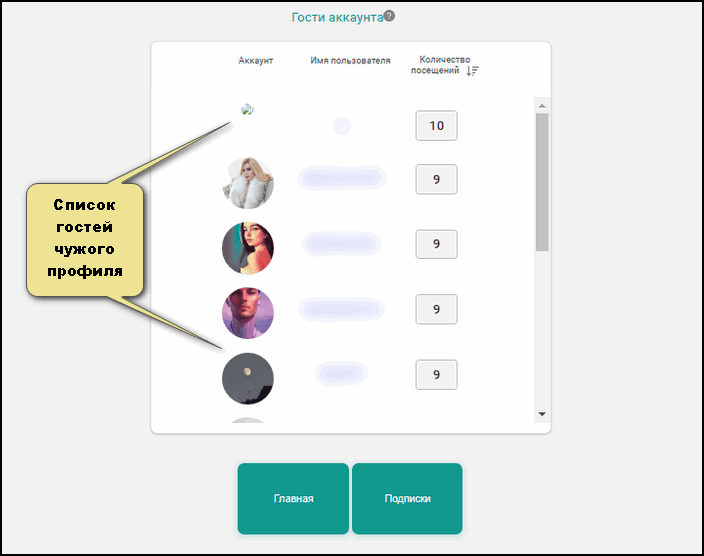
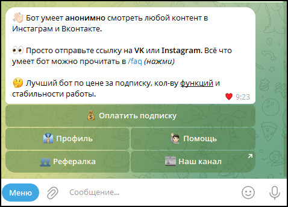
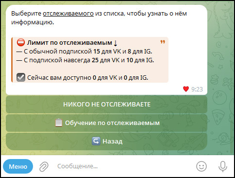
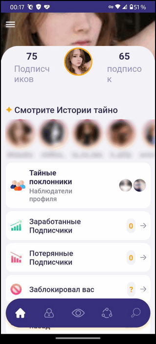

Как отследить кто заходил в Инстаграм и посмотреть гостей

Посмотреть гостей в Инстаграме* можно только через обходные способы. Официальных вариантов не существует, потому что это противоречит политике пользования.
Гости аккаунта в Инстаграме*
В социальной сети есть политика использования, направленная на максимальную конфиденциальность данных. С повышением безопасности, из Инстаграма* были удалены функции:
- оповещение о подписках друзей;
- прямые рекомендации постов, которые понравились товарищам;
- возможность просмотра подписчиков и подписок на закрытых аккаунтах.
Что касается гостей и поклонников, то эти разделы не были добавлены ни в приложение, ни в компьютерную версию. Но есть несколько способов, как узнать о посетителях профиля:
- сервис Инсташпион;
- мобильные приложения;
- Телеграм-боты и другие сервисы.
К примеру, мобильные приложения работают в основном на личные аккаунты. То есть, владелец страницы сможет посмотреть данные только по своей учетной записи. То же касается и Телеграм-ботов, где можно регулярно получать уведомления о том, что кто-то посетил страницу. Узнать гостей в Инстаграме* на чужом аккаунте такими методами не получится.
№1 Узнать через Инсташпиона
Инсташпион – это сервис, который отслеживает активность в личном или чужом аккаунте. Его преимущество в том, что можно узнать гостей в Инстаграме* даже в профиле друзей, знакомых. У сервиса есть бесплатный пробный период, доступный в течение суток.
Проверить гостей в Инстаграме* на Андроиде и Айфоне:
- Зайти в Инсташпион – добавить никнейм пользователя, которого нужно найти.
- Посмотреть в выпадающем списке аккаунт – запустить проверку данных.

- После загрузки сведений появится информация о последних посещениях, гостях.
Поклонники страницы в Инстаграме* – это те пользователи, которые регулярно посещают один и тот же аккаунт, совершая небольшие действия, но не оформляют подписку. Гости – посещают страницу один-два раза, совершают минимальное количество взаимодействий.
С помощью сервиса можно смотреть подписчиков и подписки, гостей и поклонников, недавно опубликованные Сторис. Цель Инсташпиона – отслеживание гостей, а также помощь в слежке за чужими аккаунтами. Чтобы смотреть данные – не нужен логин и пароль?.
№2 Другие сервисы для Инстаграма*
«Мои гости и фанаты из Инстаграме*» можно посмотреть с помощью Телеграм-бота. В течение суток собирает информацию и показывает информацию обо всех пользователях, которые заходили на страницу и даже не совершали каких-либо действий. Как запустить:
- Перейти в бота ТГ по ссылке.
- Нажать «Старт».

- Указать ссылку на свой профиль – отправить.

- Подождать, пока бот соберет информацию.
В информации указано, что данные станут доступны в течение 24-х часов после первого запуска. Владелец страницы получит уведомление в мессенджере. Этим же способом можно подключить чужой аккаунт и посмотреть, кто посещать. Бот не требует ввода логина и пароля от Инстаграма*.
№3 Мобильные приложения
С помощью мобильных утилит, владелец аккаунта сможет узнать, кто посещал его профиль. Приложения такого плана делятся на платные и бесплатные. Где вторых – намного меньше, чем требующих одноразовую или ежемесячную оплату. ТОП-3 приложения для наблюдения за гостями:
- InStalker;
- WhoProfile;
- Кто смотрел мой профиль.
Чтобы посмотреть посетителей страницы с помощью Instalker, нужно:
- Скачать и установить приложение с помощью Play Market.
- Открыть – авторизоваться через аккаунт в Instagram*.

- Подождать, пока приложение проверит страницу.
- Появится список гостей.
Но чтобы регулярно проверять новых посетителей, нужно подключить платный пакет на месяц. Остальные приложения похожи по функциям: зайти в свой профиль и увидеть перечень гостей.
Почему в Инстаграме* не показывает гостей стандартными средствами
Кто заходил в Инстаграм* в гости проверить через настройки социальной сети не получится. В сети распространялся фейк о том, что в последнем обновлении была добавлена такая функция. Но такая опция не существует в официальном приложении и противоречит правилам. Инстаграм* запрещает просмотр гостей потому что:
- это может стать причиной конфликта не только обычных пользователей, но и брендов, компаний;
- информация о посещении чужих страниц – личное дело;
- социальная сеть обеспокоена проблемой травли в сети;
- владельцы блогов и крупных аккаунтов будут постоянно получать уведомления, что может привести к сбоям в работе.
Существует всего один официальный способ, как отслеживать посещения – через «Статистику». В этом разделе владельцам бизнеса и блогов предложены данные о геолокации посетителей, откуда пришли, возраст и половая принадлежность. Это помогает брендам правильно настроить рекламу, подобрав целевую аудиторию, а также определить ошибки при предыдущих промоакциях.